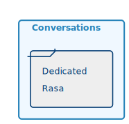

Current architecture's limitations
- Created for one big client, not in line with our current needs
- Requires re-training for every new data added
- Training process hard to fully automized
- Categories and sub-categories are hard to define correctly
- Many problems arise when using datasets with overlapping meanings
Guide lines for an evolution
- Avoid specific trainings whenever it's possible
- Do not require huge amount of data to start working
- By default, no data leaks between projects
- Use categories as contextual helps instead of arbitrary silos
Ex: The question How many dead during the landing ?
in the absolute, is not equal to
How many dead during the landing of the bay of pigs ?
nor
How many dead during the landing of the D-Day ?
Basically, the aim of the new architecture is to build a NLP search engine with the ability to tell if an information is present or not.
Architecture Overview

Impacted Containers*
Not Docker! In the C4 model, a container represents an application or a data store.
A container is something that needs to be running in order for the overall software system to work.
Rasa(s)

 Each project has its own instance of Maestro, so we must also have one Rasa instance per Maestro with a dedicated RabbitMQ queue
Each project has its own instance of Maestro, so we must also have one Rasa instance per Maestro with a dedicated RabbitMQ queue
Ex: tbott-rpc.domain.project
Neural Networks

As explained in Sentence-BERT: Sentence Embeddings using Siamese BERT-Networks paper, while pretrained BERT model perform poorly for sentence embeddings, BERT models fine-tuned on sentence matching are slow and resource hungry.
So to build an efficient search engine we must use two different models,
- one for sentence encoding that will be fed to an efficient search index such as FAISS to quickly output candidates,
- and another one for sentence matching to be able to make the difference between a best match and a true match
Sentence Encoder
- Encode sentence as a contextual vector
- ex: Universal Sentence Encoder Multilingual from Google
- Used in Faiss Index to find best candidates
- Trained only once
- Follows SOTA improvements
Sentence Matching
- Tells if two sentences are the same or not
- Provides relevance score
- Do not use sentence encoder's vectors
- Trained only once
- Follows SOTA improvements
Maestro
- Maestro is split in 3 parts for maintainability and efficiency.
- All 3 containers are grouped within the same Pod
- A Pod is dedicated to a Target (ex: prod or test) attached to a Project within a Domain
In this doc referred as Domain.Project.Target - For redundancy and scalability, multiple Pods can share the same Domain.Project.env
- All communications must be integrated within the Messaging library
- Messages between containers use JSON format containing Numpy arrays.
- Communications within a Pod is done through ZeroMQ on 127.0.0.1
-> Containers within a Pod share the same network namespace, enabling the use of localhost address.
-> ZeroMQ is fast, flexible and is indifferent to the startup order of clients and servers.
-> more or less act as an IPC within the Pod - Exemple of numpy serialisation with ZeroMQ: https://pyzmq.readthedocs.io/en/latest/serialization.html